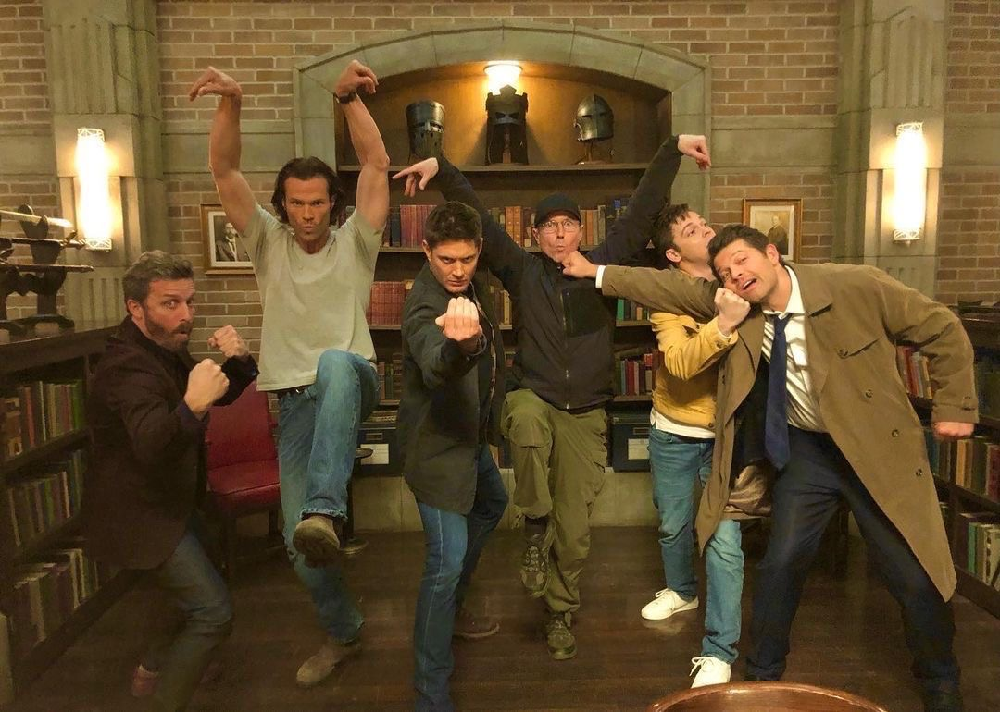

-
Фритрек и нулевой спринт: Подготовка к работе
 </HTML>Это было самое начало пути. На этом этапе важно было проникнуться основами и настроиться на учёбу. И, возможно, подумать, как новые знания могут повлиять на ваше будущее.
Я давно хотела узнать об этой профессии, и с нетерпением ждала обучения)
-
1 спринт: Я — чистый лист
</IT-Universe>На первых этапах мы работали со страхами и сомнениями, которые часто испытывают новички. Один из них — страх перед чистым листом. Это, конечно же, намного сложнее, чем боязнь куска бумаги. Часто за этим ощущением скрываются более глубокие вопросы: с чего начать? А вдруг будет слишком сложно? Что, если я не справлюсь?
Сначала все давалось легко, и я даже думала что верстка не так уж и сложна...
-
1 спринт: А если не получится?
 <First_project>
<First_project>
Первый проект — позади! Но это всё ещё самое начало пути. Радость могла быстро померкнуть и смениться ожиданием провала. Или вы, наоборот, могли вдохновиться успехами и поверить в себя.
Первый проект дался не так уж сложно, и было интересно и трепетно создавать свою первую работу.
-
2 спринт: Погоня за идеалом
<knowlege>На этом этапе вы уже достаточно разбирались в основах вёрстки, чтобы понять, как много ещё впереди. Вы могли попытаться погнаться за идеалом и понять, что он недостижим. А, может, вы вовсе и не подвержены перфекционизму и вместо того, чтобы сделать идеально, старались просто сделать.
Изначально я и правда думала сделать все идеально, но в дальнейшем я поняла что ничего идеальным не будет, и тем более в середине проекта мне не хватало времени
-
2 спринт: О тех, кто рядом
careВсё это время вы были не одиноки (хотя, возможно, иногда и чувствовали, что одни против целого мира). Вас окружали одногруппники, команда сопровождения и просто близкие люди, которым можно пожаловаться, если очередной макет просто так не поддавался. Осваивать что-то новое легче, когда рядом есть единомышленники, не правда ли?
Мне очень помогали и наставники и студенты, благодаря их поддержки я смогла с успехом закончить свой второй проект.
-
3 спринт: Обходные стратегии
<support>На этом курсе вы постоянно решали разные задачи. В какой-то момент вам могло показаться, что решения просто иссякли. Значит, пришло время посмотреть на задачу под другим углом.
Сколько же я потеряла нервных клеток на этом этапе... У меня многое не получалось, я поменяла группу.
-
3 спринт: Когда опускаются руки
 <lifes-style: none;>
<lifes-style: none;>
Во время учёбы часто возникает чувство, когда не знаешь, за что хвататься. Вроде и проектную пора сдавать, и задачи хочется порешать, и в теории получше разобраться, и жизнь не забыть пожить. В такие моменты очень нужна концентрация. Вспомните, откуда вы её черпали.
На 3 проектой работе, я хотела все бросить, у меня реально опустились руки. Хотя сама тема спринта была понятна, но механика мне давалась не легко. Я дважды меняла группу, и в конечном итоге решила взять себя в руки и продолжить как бы не было сложно, думая о будущих сожалениях, я все таки смогла.
-
«Сейчас я здесь»
<expirience>Сейчас вы уже очень много знаете о вёрстке. Но это только начало. Во-первых, впереди ещё много материала про «красотищу». Во-вторых, с окончанием курса учёба не заканчивается. Вёрстка — это целый мир. И этот мир постоянно меняется. Познать его полностью не получится, но это тот случай, когда важен сам процесс познания. Ведь часто путь — и есть результат.
Я знала, что выбрала сложный путь, и двигаюсь к нему через множество преград, надеюсь я преодолею все, и через время взгляну на эту работу, чтобы посмеяться)